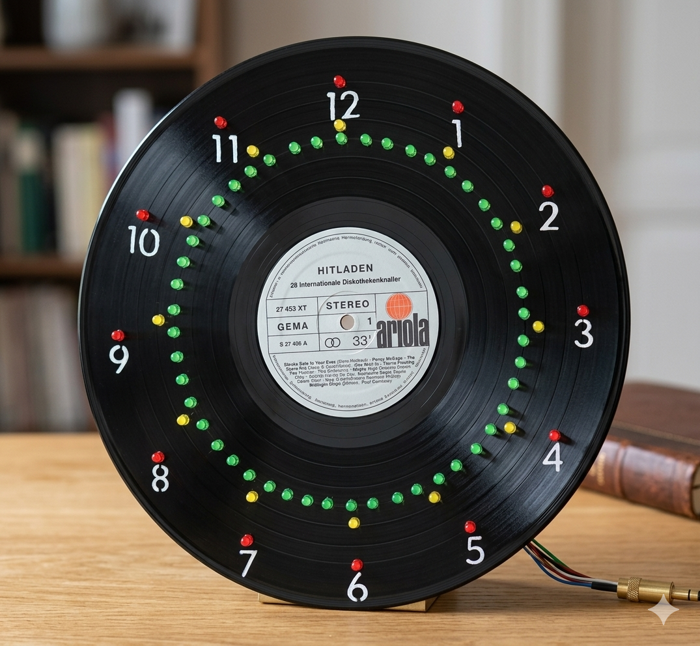

Projects
Selected work — hardware, embedded, and software

Analog-Digital Clock
ATmega8535 driven clock with shift registers, LED matrix display, and custom 3D-printed housing. Written in pure C++ without any external libraries — every driver implemented from scratch at the register level.
Weather Station 2.0
Modular IoT weather station on ESP32. Multi-sensor fusion, WiFi telemetry, and a clean data pipeline. Designed with modularity in mind — each sensor module is independently swappable.
GO-CORE-LAB
Personal low-level research framework in Go. ELF/PE binary parsing and symbol extraction, hardware bridge for SPI/I2C/UART capture from embedded targets, and a network probe module. Each tool is a statically compiled binary — drop anywhere and run.
Traffic Light Controller
Arduino-based traffic light controller written in C. Implements a state machine with hardware-accurate timing and proper pedestrian crossing logic. One of the first hardware projects — clean, simple, functional.